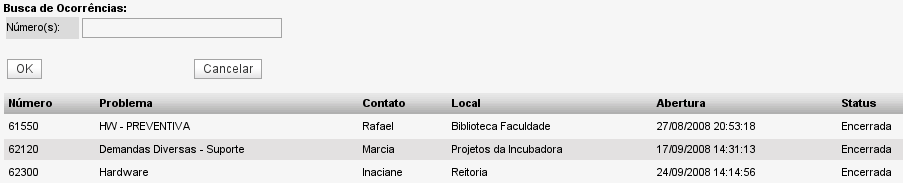

Busca rápida de ocorrências (Menu Ocorrências -> Busca rápida )
É possível buscar por ocorrências de forma rápida através de seu número de identificação. Como é sabido, toda ocorrência ao ser aberta gera um número único que é seu identificador no sistema.
Para buscar uma ocorrência basta digitar o número da mesma no campo de pesquisa. Também é possível buscar mais de uma ocorrência ao mesmo tempo, bastando separar os número identificadores por vírgula.

Tela de retorno de uma busca rápida - versão 2.0rc3
Na tela à cima, visualizamos o retorno de uma busca por 3 números de ocorrência. Para termos acesso aos detalhes de cada ocorrência basta clicar no número correspondente.